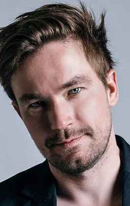

Текст Navbar'a



Александр Петров
О персоне
Карьера Актер, Режиссер, Сценарист, Актер дубляжа, Продюсер
Рост 1.74 м
Дата рождения 25 января, 1989 • Водолей • 34 года
Место рождения Переславль-Залесский, СССР
Жанры Драма, комедия, приключения
Супруга Виктория Петрова
Всего фильмов 90, 2010 — 2024
Алекса́ндр Андре́евич Петро́в
Алекса́ндр Андре́евич Петро́в (род. 25 января 1989, Переславль-Залесский, РСФСР, СССР) — российский актёр театра и кино. Двукратный лауреат премии «Золотой орёл»: за «Лучшую мужскую роль в кино» («Текст», 2020) и «Лучшую мужскую роль на телевидении» («Sпарта», 2019)[1].
fghjkl;lkjhgfdsfghjkhgvc
Footer